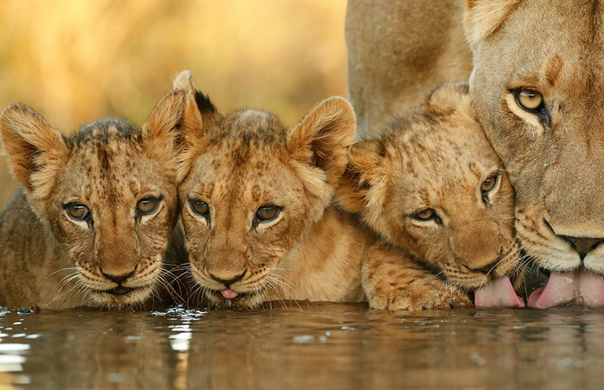

Who Are We?
Lion Guardians is a conservation organization dedicated to finding and enacting long-term solutions for people and lions to coexist. Founded in 2007, Lion Guardians began with five Guardians in one small area within the Amboseli-Tsavo ecosystem. Currently, there are Lion Guardians-based projects successfully running in several countries and in our core area of Amboseli, our operations span over close to a million acres. We are committed to workable solutions that are scientifically-driven and transferable across areas.
What We Do
Lion Guardians’ conservation model is adaptable to various cultures and wildlife species. Founded on local value systems, community participation and science, it is based on a decade of research and rigorous measures of success. Our approach involves recruiting young, traditional Maasai and other pastoralist warriors to learn the skills needed to effectively mitigate conflicts between people and wildlife, monitor lion populations, and help their own communities live with lions. By actively engaging in our solutions-based conservation model, people who were once lion killers are transformed into lion protectors.
